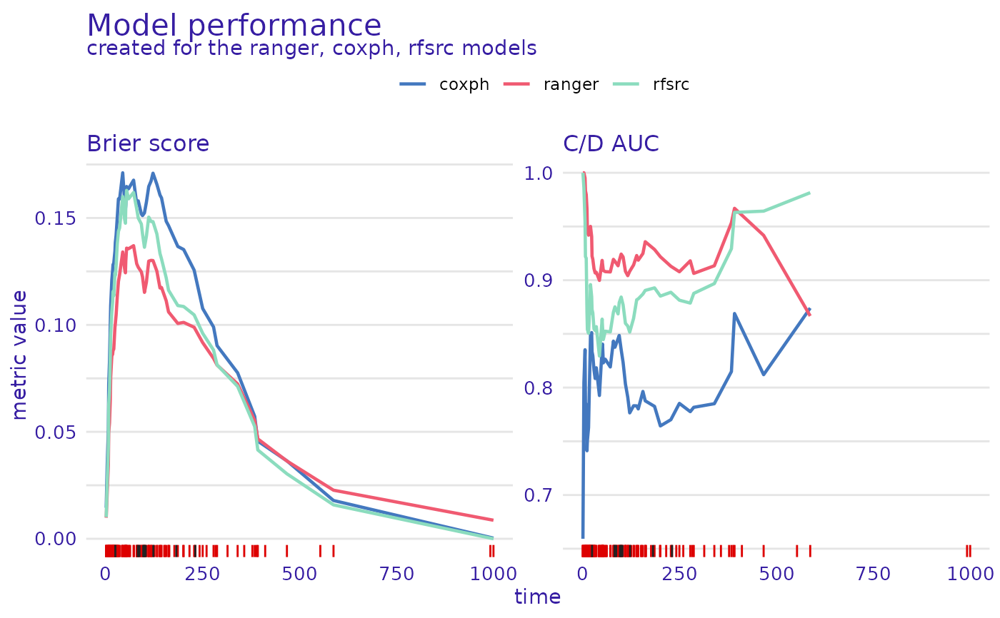
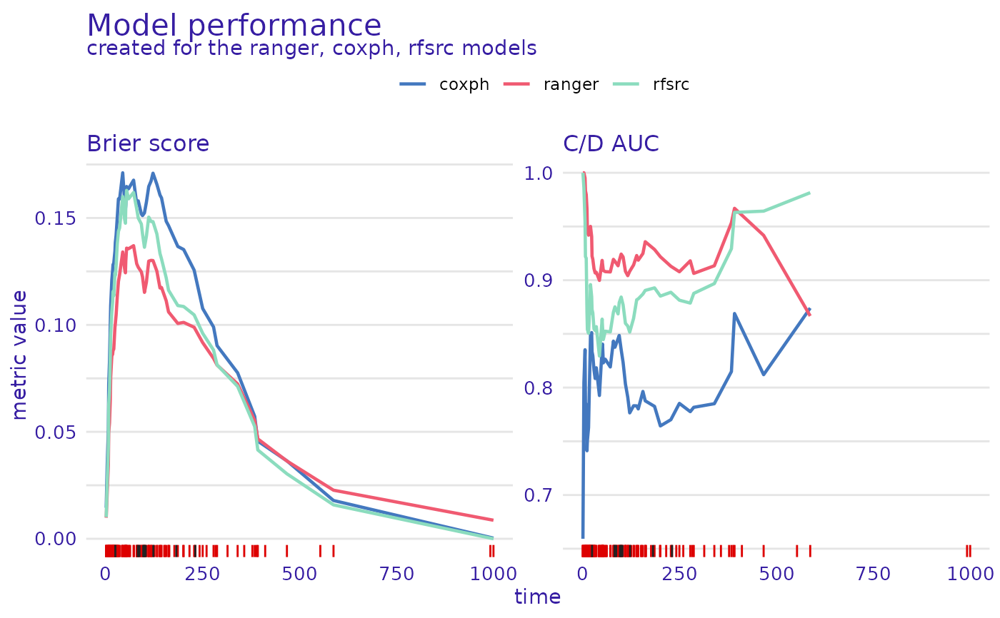

Dataset Level Performance Measures
Source:R/model_performance.R
model_performance.surv_explainer.RdThis function calculates metrics for survival models. The metrics calculated are C/D AUC, Brier score, and their integrated versions, as well as concordance index. It also can calculate ROC curves for specific selected time points.
Usage
model_performance(explainer, ...)
# S3 method for surv_explainer
model_performance(
explainer,
...,
type = "metrics",
metrics = c(`C-index` = c_index, `Integrated C/D AUC` = integrated_cd_auc,
`Brier score` = brier_score, `Integrated Brier score` = integrated_brier_score,
`C/D AUC` = cd_auc),
times = NULL
)Arguments
- explainer
an explainer object - model preprocessed by the
explain()function- ...
other parameters, currently ignored
- type
character, either
"metrics"or"roc". If"metrics"then performance metrics are calculated, if"roc"ROC curves for selected time points are calculated.- metrics
a named vector containing the metrics to be calculated. The values should be standardized loss functions. The functions can be supplied manually but has to have these named parameters (
y_true,risk,surv,times), wherey_truerepresents thesurvival::Survobject with observed times and statuses,riskis the risk score calculated by the model, andsurvis the survival function for each observation evaluated attimes.- times
a numeric vector of times. If
type == "metrics"then the survival function is evaluated at these times, iftype == "roc"then the ROC curves are calculated at these times.
Value
An object of class "model_performance_survival". It's a list of metric values calculated for the model. It contains:
References
[1] Harrell, F.E., Jr., et al. "Regression modelling strategies for improved prognostic prediction." Statistics in Medicine 3.2 (1984): 143-152.
[2] Brier, Glenn W. "Verification of forecasts expressed in terms of probability." Monthly Weather Review 78.1 (1950): 1-3.
[3] Graf, Erika, et al. "Assessment and comparison of prognostic classification schemes for survival data." Statistics in Medicine 18.17‐18 (1999): 2529-2545.
[4] Uno, Hajime, et al. "Evaluating prediction rules for t-year survivors with censored regression models." Journal of the American Statistical Association 102.478 (2007): 527-537.
Examples
library(survival)
library(survex)
cph <- coxph(Surv(time, status) ~ ., data = veteran, model = TRUE, x = TRUE, y = TRUE)
rsf_ranger <- ranger::ranger(Surv(time, status) ~ .,
data = veteran,
respect.unordered.factors = TRUE,
num.trees = 100,
mtry = 3,
max.depth = 5)
rsf_src <- randomForestSRC::rfsrc(Surv(time, status) ~ .,
data = veteran)
cph_exp <- explain(cph)
#> Preparation of a new explainer is initiated
#> -> model label : coxph ( default )
#> -> data : 137 rows 6 cols ( extracted from the model )
#> -> target variable : 137 values ( 128 events and 9 censored ) ( extracted from the model )
#> -> times : 94 unique time points , min = 1 , mean = 119.9706 , max = 845.56
#> -> times : ( generated from y with method quantiles )
#> -> predict function : predict.coxph with type = 'risk' will be used ( default )
#> -> predict survival function : predictSurvProb.coxph will be used ( default )
#> -> predict cumulative hazard function : -log(predict_survival_function) will be used ( default )
#> -> model_info : package survival , ver. 3.4.0 , task survival ( default )
#> A new explainer has been created!
rsf_ranger_exp <- explain(rsf_ranger, data = veteran[, -c(3, 4)],
y = Surv(veteran$time, veteran$status))
#> Preparation of a new explainer is initiated
#> -> model label : ranger ( default )
#> -> data : 137 rows 6 cols
#> -> target variable : 137 values ( 128 events and 9 censored )
#> -> times : 94 unique time points , min = 1 , mean = 119.9706 , max = 845.56
#> -> times : ( generated from y with method quantiles )
#> -> predict function : sum over the predict_cumulative_hazard_function will be used ( default )
#> -> predict survival function : stepfun based on predict.ranger()$survival will be used ( default )
#> -> predict cumulative hazard function : stepfun based on predict.ranger()$chf will be used ( default )
#> -> model_info : package ranger , ver. 0.14.1 , task survival ( default )
#> A new explainer has been created!
rsf_src_exp <- explain(rsf_src)
#> Preparation of a new explainer is initiated
#> -> model label : rfsrc ( default )
#> -> data : 137 rows 6 cols ( extracted from the model )
#> -> target variable : 137 values ( 128 events and 9 censored ) ( extracted from the model )
#> -> times : 94 unique time points , min = 1 , mean = 119.9706 , max = 845.56
#> -> times : ( generated from y with method quantiles )
#> -> predict function : sum over the predict_cumulative_hazard_function will be used ( default )
#> -> predict survival function : stepfun based on predict.rfsrc()$survival will be used ( default )
#> -> predict cumulative hazard function : stepfun based on predict.rfsrc()$chf will be used ( default )
#> -> model_info : package randomForestSRC , ver. 3.1.1 , task survival ( default )
#> A new explainer has been created!
cph_model_performance <- model_performance(cph_exp)
rsf_ranger_model_performance <- model_performance(rsf_ranger_exp)
rsf_src_model_performance <- model_performance(rsf_src_exp)
print(cph_model_performance)
#> $`C-index`
#> [1] 0.7360464
#> attr(,"loss_type")
#> [1] "risk-based"
#>
#> $`Integrated C/D AUC`
#> [1] 0.8216749
#> attr(,"loss_type")
#> [1] "integrated"
#>
#> $`Brier score`
#> [1] 0.01450469 0.01450469 0.02131799 0.03395903 0.05085721 0.07237285
#> [7] 0.08296505 0.08296505 0.08976566 0.10034947 0.10895859 0.11860639
#> [13] 0.11860639 0.12115921 0.12534671 0.12534671 0.12812196 0.12899805
#> [19] 0.12899805 0.12894844 0.13311293 0.13452743 0.13853090 0.14201661
#> [25] 0.14171276 0.15028547 0.15745581 0.15745581 0.15894651 0.15887866
#> [31] 0.16421655 0.16678636 0.16752588 0.16054595 0.15386626 0.15386626
#> [37] 0.15595910 0.15595910 0.15824493 0.16471718 0.16763382 0.16364167
#> [43] 0.16343522 0.16768271 0.15672279 0.15672279 0.15781375 0.15800998
#> [49] 0.15707059 0.15707059 0.15188724 0.15110733 0.15110733 0.15151055
#> [55] 0.15151055 0.15237535 0.15325489 0.15325489 0.16278271 0.16469163
#> [61] 0.16469163 0.16725319 0.16725319 0.17057980 0.16644868 0.16788043
#> [67] 0.16572450 0.16628150 0.16073207 0.15935967 0.15352345 0.14851016
#> [73] 0.14642744 0.14642744 0.14359704 0.14083776 0.13666323 0.13547324
#> [79] 0.12885560 0.12559400 0.11816123 0.11207367 0.10765794 0.09901280
#> [85] 0.09889997 0.09031670 0.07760702 0.07237333 0.06668832 0.05535086
#> [91] 0.04565290 0.04001131 0.02744170 0.01789265
#> attr(,"loss_type")
#> [1] "time-dependent"
#>
#> $`Integrated Brier score`
#> [1] 0.07182192
#> attr(,"loss_type")
#> [1] "integrated"
#>
#> $`C/D AUC`
#> [1] 0.6592593 0.6592593 0.7388060 0.8045455 0.8352713 0.7846667 0.7845528
#> [8] 0.7845528 0.7398907 0.7411765 0.7506690 0.7516420 0.7516420 0.7628458
#> [15] 0.7982143 0.7982143 0.8151515 0.8333333 0.8333333 0.8487523 0.8407738
#> [22] 0.8512279 0.8333333 0.8296703 0.8358247 0.8165414 0.8059629 0.8059629
#> [29] 0.8084541 0.8184397 0.8031367 0.8021800 0.8027816 0.8158371 0.8392857
#> [36] 0.8392857 0.8405041 0.8405041 0.8363636 0.8230108 0.8174603 0.8264127
#> [43] 0.8299189 0.8191898 0.8432836 0.8432836 0.8410158 0.8375428 0.8326882
#> [50] 0.8326882 0.8454545 0.8485378 0.8485378 0.8465632 0.8465632 0.8353549
#> [57] 0.8340173 0.8340173 0.8107607 0.8033097 0.8033097 0.7910557 0.7910557
#> [64] 0.7805542 0.7888720 0.7824742 0.7830979 0.7721622 0.7830033 0.7801256
#> [71] 0.7919580 0.8023810 0.7876756 0.7876756 0.7870249 0.7799723 0.7825000
#> [78] 0.7750737 0.7739130 0.7701149 0.7818912 0.7875817 0.7852941 0.7775956
#> [85] 0.7572590 0.7816377 0.7849928 0.7763780 0.7673611 0.7846154 0.8689567
#> [92] 0.8545455 0.8233831 0.8740741
#> attr(,"loss_type")
#> [1] "time-dependent"
#>
#> $eval_times
#> [1] 1.00 1.36 2.72 4.24 7.00 8.00 10.00 10.60 11.96 12.32
#> [11] 13.00 15.00 15.40 17.52 18.00 18.48 19.00 20.00 20.56 21.00
#> [21] 22.56 24.00 25.00 27.16 29.44 30.00 31.00 32.04 34.76 37.44
#> [31] 42.60 43.96 45.96 48.68 51.00 51.76 52.00 52.48 53.84 54.40
#> [41] 57.68 60.84 65.52 72.64 80.00 80.72 82.72 84.24 87.00 89.40
#> [51] 92.48 95.00 96.76 99.00 99.60 100.00 103.00 104.36 110.04 111.00
#> [61] 111.76 117.00 117.48 121.36 123.60 129.36 132.92 139.28 141.92 144.00
#> [71] 151.72 155.16 162.00 162.88 174.40 182.64 193.28 200.88 218.88 229.80
#> [81] 231.00 244.56 256.80 278.20 284.60 307.52 342.04 367.08 383.04 389.60
#> [91] 402.64 462.52 562.52 845.56
#>
#> attr(,"class")
#> [1] "model_performance_survival" "surv_model_performance"
#> [3] "list"
#> attr(,"label")
#> [1] "coxph"
plot(rsf_ranger_model_performance, cph_model_performance,
rsf_src_model_performance, metrics_type = "scalar")
 plot(rsf_ranger_model_performance, cph_model_performance, rsf_src_model_performance)

cph_model_performance_roc <- model_performance(cph_exp, type = "roc", times = c(100, 250, 500))
plot(cph_model_performance_roc)
plot(rsf_ranger_model_performance, cph_model_performance, rsf_src_model_performance)

cph_model_performance_roc <- model_performance(cph_exp, type = "roc", times = c(100, 250, 500))
plot(cph_model_performance_roc)